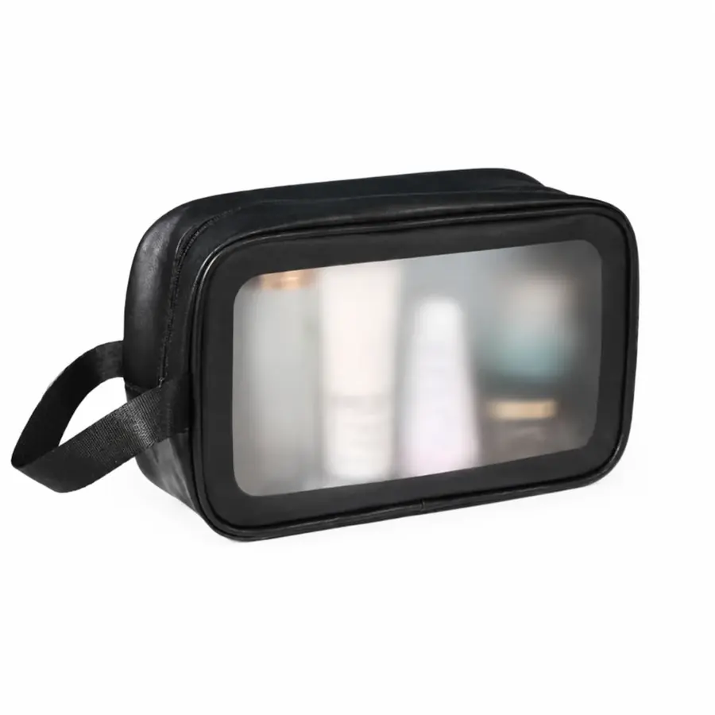

Necessaires e estojos personalizados

A LS Confecções fabrica necessaires e estojos personalizados no atacado em São Paulo. São produtos de ótimo custo-benefício para brindes corporativos, kits de evento e marcas de varejo — com pedido mínimo de 20 unidades.
Modelos que fabricamos
- Necessaires — com visor transparente, zíper duplo, nylon ou couro sintético;
- Estojos — para papelaria, maquiagem, eletrônicos e kits;
- Necessaires para brinde — com a marca da empresa, ótimas para kits de boas-vindas;
- Estojos para varejo — linha própria de marca autoral.
Personalização completa
Aplicamos sua identidade por bordado, silk ou etiquetas e oferecemos opções de material (nylon, cotelê, couro sintético), cor e tipo de fechamento. Necessaire e estojo são itens de uso constante — sua marca circula todos os dias.
Como pedir
Envie a arte ou o logo, escolha o modelo e a quantidade, e produzimos uma peça piloto para aprovação. O lote fica pronto em até 25 dias úteis.
Por que a LS Confecções
- Pedido mínimo acessível de 20 unidades;
- Fábrica própria em São Paulo, atendimento direto;
- Diversos modelos e materiais para personalizar;
- Perfeitas para compor kits com outros brindes.
Montando um kit? Combine com ecobags e pochetes personalizadas.
Necessaire personalizada: usos, materiais e por que vende tanto
A necessaire é um daqueles produtos versáteis que atendem públicos muito diferentes com o mesmo molde. Serve como item de marca própria para linhas de beleza e viagem, como brinde corporativo em kits de eventos e hotelaria, e como acessório complementar em coleções de moda. Por ser compacta e de produção acessível, é uma excelente opção tanto para testar uma marca quanto para compor kits em grande volume.
Os materiais mais usados vão do nylon resistente e impermeável — ideal para necessaires de viagem e higiene — à lona e à sarja, que dão um acabamento mais sofisticado e aceitam bem o bordado. Detalhes como visor transparente, zíper de qualidade e forro impermeável fazem diferença na percepção de valor e podem ser definidos conforme o posicionamento da sua marca.
Produzimos necessaires personalizadas a partir de 20 unidades, com peça piloto aprovada antes do lote. Veja os modelos no catálogo e, se o objetivo for brinde de empresa, conheça a linha de brindes corporativos.
Necessaire para personalizar no atacado: como funciona
Comprar necessaire para personalizar no atacado direto da fábrica muda a conta de duas formas. A primeira é o preço: sem intermediário, você paga o custo de produção real, e o valor por peça cai conforme o lote cresce — porque a preparação (modelagem, corte e regulagem de máquina) se dilui na quantidade. A segunda é a liberdade: você define tecido, medidas, forro, cor do zíper e o tipo de aplicação da marca, em vez de escolher dentro de um catálogo pronto.
O fluxo é simples: você envia a referência ou escolhe um modelo nosso, aprovamos juntos tecido e arte, produzimos a peça piloto para você ver e aprovar fisicamente, e só então o lote entra em produção — em até 25 dias úteis. O pedido mínimo é de 20 unidades por modelo, o que permite testar antes de escalar.
Modelos de necessaire que mais saem
- Necessaire de viagem / higiene — impermeável por dentro, com bolsos internos. É a mais pedida para kits e hotelaria;
- Necessaire de maquiagem — formato mais largo e estruturado, muitas vezes com forro claro para facilitar enxergar o conteúdo;
- Estojo simples — o modelo mais econômico, ideal para grandes volumes de brinde e para uso escolar ou corporativo;
- Necessaire com visor transparente — atende regras de bagagem de mão e tem apelo prático forte;
- Necessaire premium em lona ou sarja — acabamento sofisticado que aceita bordado muito bem, para marcas de moda e beleza.
Materiais e acabamentos: o que escolher
O material define a percepção de valor e o custo. Nylon é resistente, leve e impermeável — a escolha padrão para viagem e higiene. Poliéster aceita sublimação e permite estampas coloridas em toda a peça. Lona e sarja de algodão entregam um visual mais autoral e premium, e são as melhores bases para bordado.
Nos acabamentos, três detalhes mudam bastante a percepção: o forro impermeável (essencial em necessaire de higiene e maquiagem), o zíper de qualidade — o item que mais gera reclamação quando falha — e o puxador personalizado, que profissionaliza a peça por um custo baixo. Para escolher entre bordado, silk e sublimação, vale ler o comparativo das técnicas.
Montando uma linha completa? A necessaire combina naturalmente com bolsas de viagem e pochetes personalizadas na mesma identidade visual.
Perguntas frequentes
Qual o pedido mínimo de necessaires personalizadas?
O pedido mínimo é de 20 unidades por modelo, ideal para brindes e para revenda.
Qual a diferença entre necessaire e estojo?
São itens próximos: a necessaire costuma ser usada para higiene e maquiagem, e o estojo para papelaria, eletrônicos ou kits. Fabricamos os dois, personalizados.
Vocês fazem necessaire com visor e zíper duplo?
Sim. Temos modelos com visor transparente, zíper duplo e diferentes materiais como nylon, cotelê e couro sintético.
Serve como brinde corporativo?
Sim. Necessaires e estojos são brindes de uso constante e ótimo custo-benefício, muito usados em kits de boas-vindas e eventos.
Peça um orçamento sem compromisso
Fabricação B2B a partir de 20 unidades, com peça piloto antes do lote e entrega em até 25 dias úteis. Fale direto com nosso comercial e receba uma proposta em minutos.
Falar com o comercial